Milestone: M4 Tone & space · rendered 31 Oct 2026 9:55:52pm by FreddyVerb_Snapshots. Click an image to open it full size.
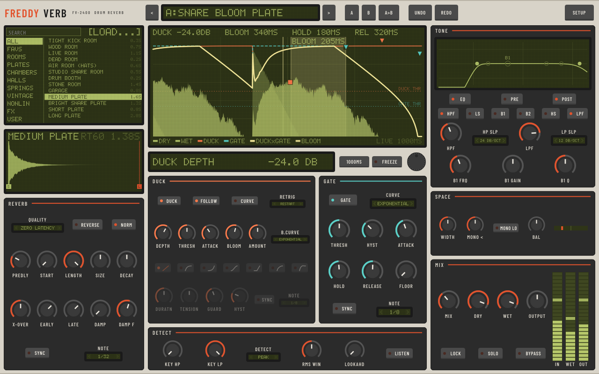
Warm grey-beige chassis, green-yellow backlit LCD, red-orange accent, black screen-printed labels. The baseline.
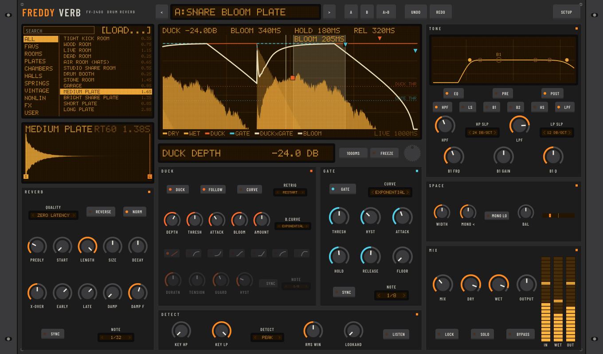
Charcoal 2U-style rack front with flat ears and screw dots, amber LCD, orange pad LEDs, dense small labels.
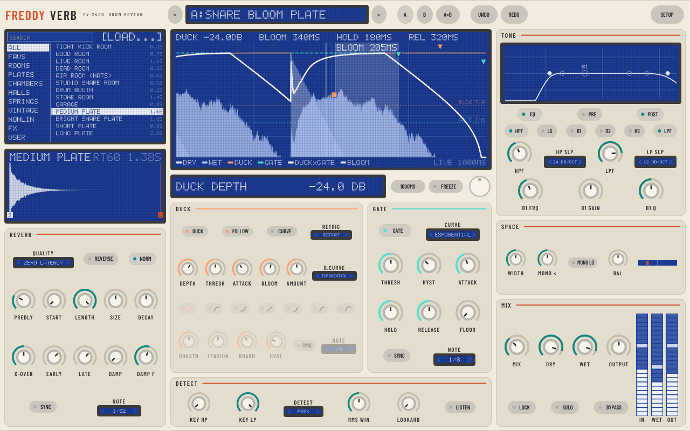
Off-white body, blue-backlit LCD with white pixels, soft grey pads, teal secondary accent. Clean and spacious.
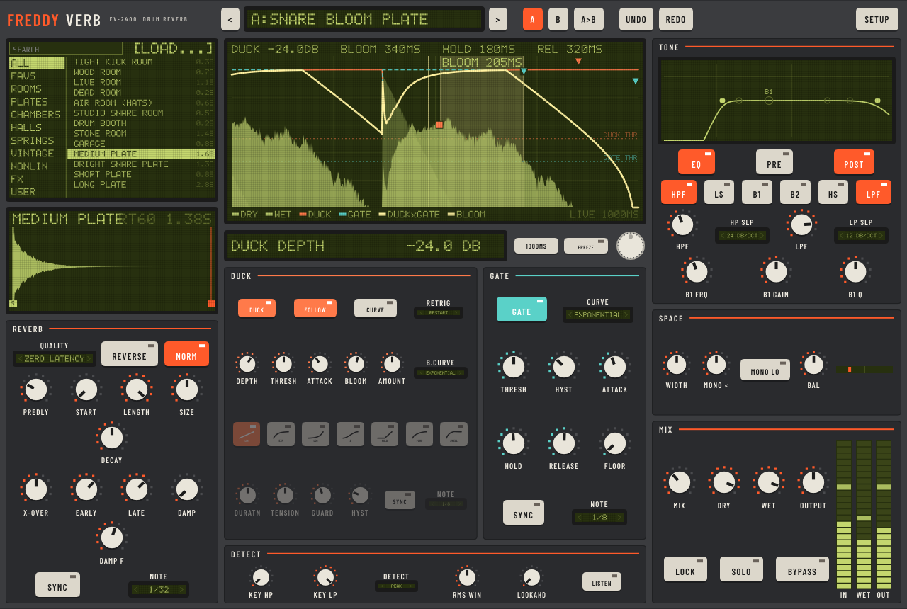
Drum-machine style: big square rubber pads select mode and curve shapes. Chunky, playful, high contrast on dark grey.
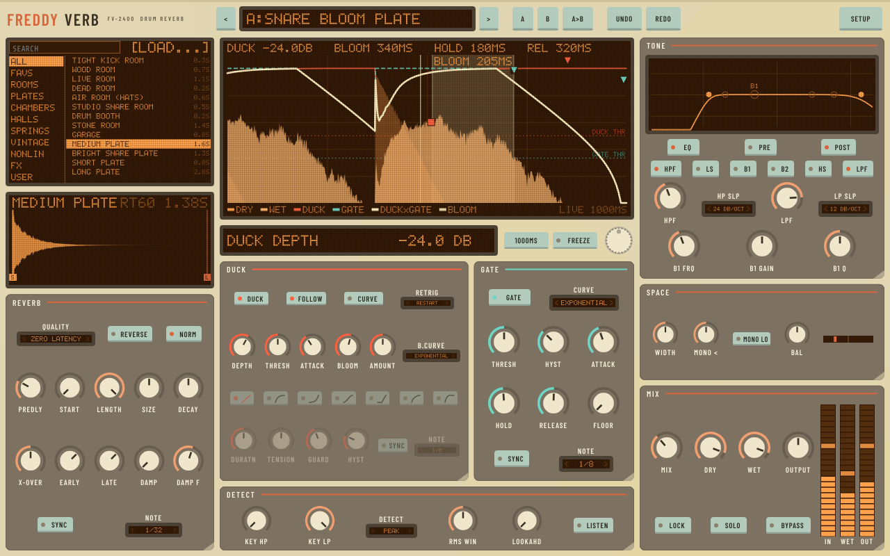
Aged, slightly yellowed plastic, muted pastel buttons, orange LCD, worn feel from flat colour only.
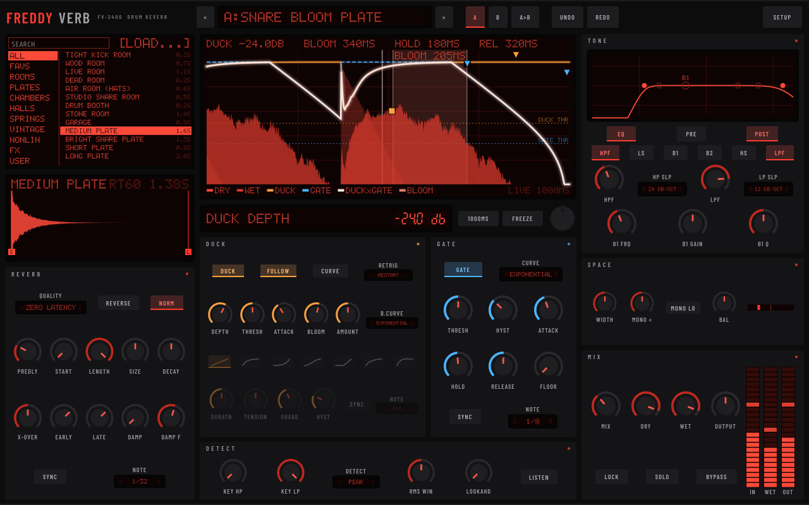
Dark mode: near-black panel, red 7-segment LED readouts, dim red-on-black LCD, minimal labels.
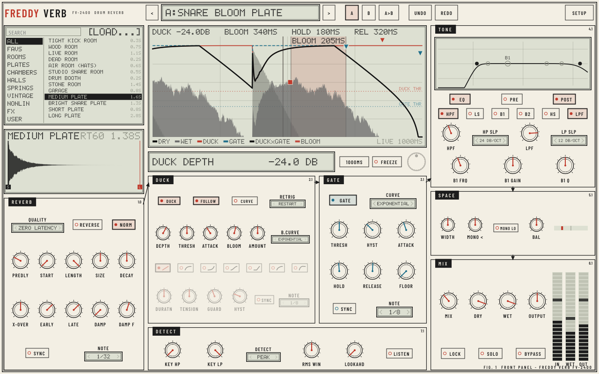
Drawn like a vintage service manual: two-tone line art, printed signal-flow arrows between sections, mono LCD.
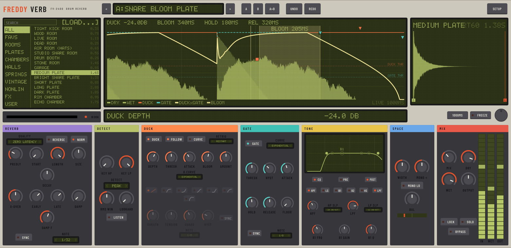
Wide, horizontal and sectioned: a colour band per stage, a big central LCD and a disk-drive slot IR loader.
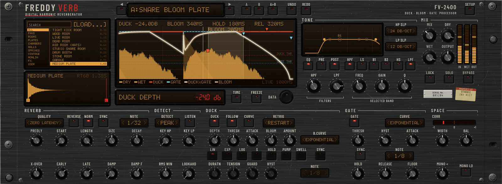
Black anodized brushed aluminium, worn white silkscreen, red 7-segment LEDs, square LED buttons, amber VFD envelope.
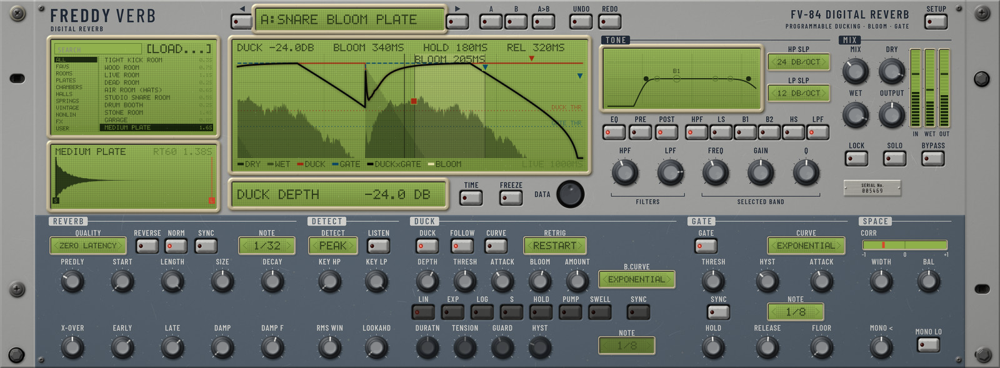
Silver-grey and blue-grey paint, green-backlit pixel LCD, grey rubber membrane keys, yellowed display bezel.
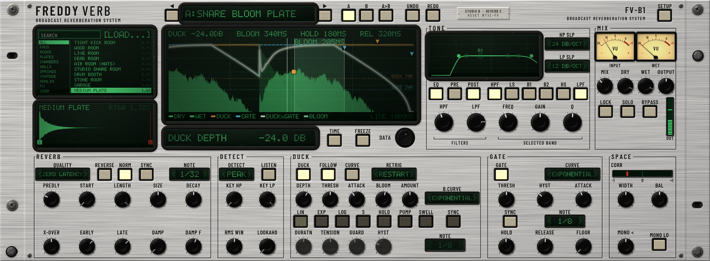
Heavy brushed natural aluminium 4U, engraved black-filled labels, knurled black knobs, twin VU meters, green CRT scope.
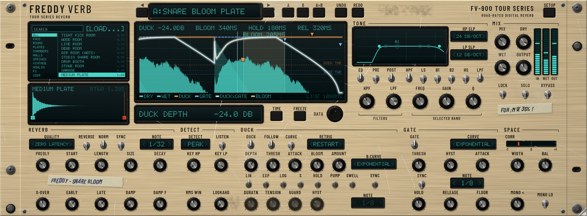
Champagne-gold anodized panel with heavy road wear, gaffer residue, masking-tape notes, cyan VFD, chunky toggles.
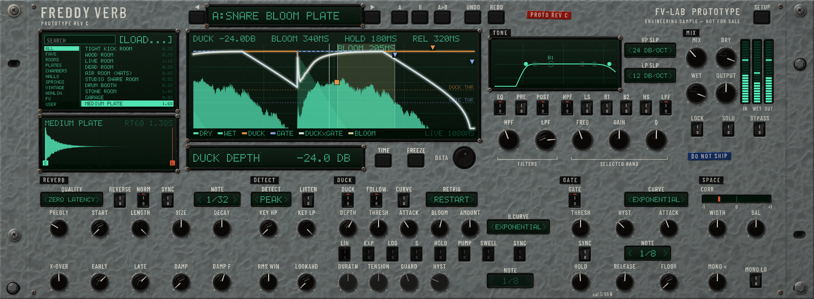
Grey hammertone steel, embossed label-tape section names, cyan-green VFD dot matrix, chicken-head knobs, rocker switches.